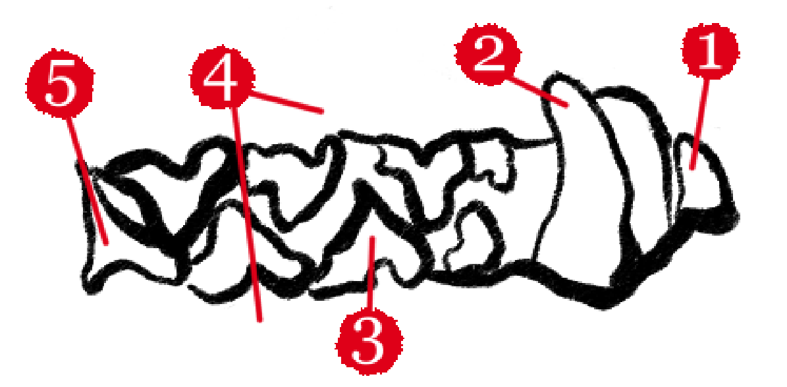
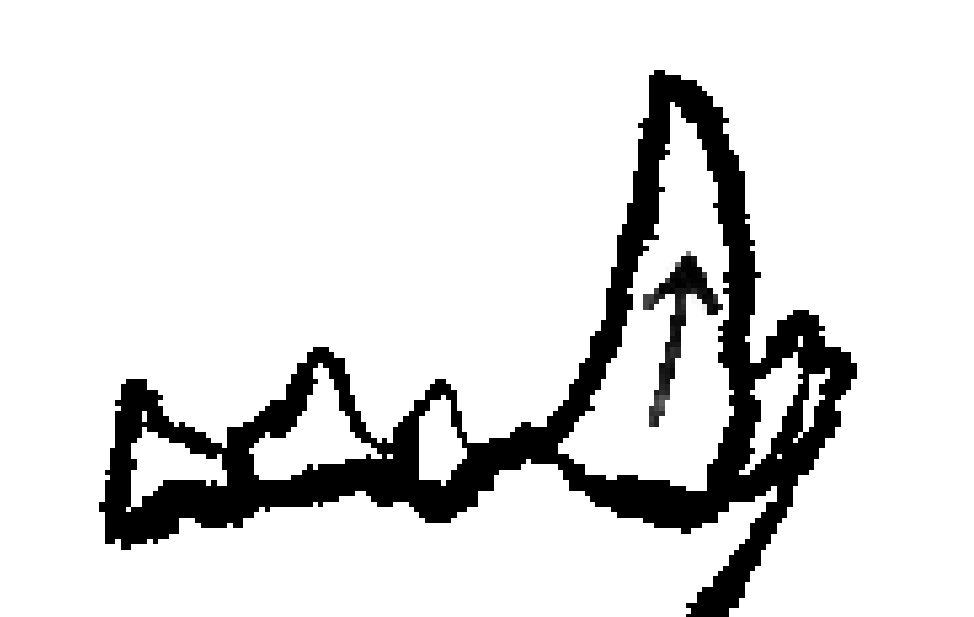

Operator’s Manual
Tongue-to-Tooth Dental Maintenance of Office Bears
Model BR-LICK-42 | Document BR-FAC-0714-C | Rev. 11/2026
Keep this reference material for future cleanings.
Contents
- 1 Important Safety Rules2
- 2 Symbols3
- 3 Specifications3
- 4 Know Your Bear4
- 5 Preparation5
- 6 Licking Technique6
- 7 Operation9
- 8 Bear Reference11
- 9 Maintenance12
- 10 Troubleshooting12
- 11 Warranty & Service13
1Important Safety Rules
Read all instructions. Failure to follow the instructions listed below may result in injury to the employee, injury to the bear, or failure to renew your certification.
General safety
- Know your assignment. Clean only the bears listed on your Floor Schedule.
- Do not use the tongue for any other purpose during the cleaning. Do not talk while licking.
- Keep unassigned employees and visitors at least 10 ft from the work area.
- Wear the issued lanyard marked I AM CLEANING TEETH at all times.
- Confirm that the bear is awake, calm, and seated before you begin.
- Do not overreach. Keep proper footing and balance at all times.
Do not clean during meetings, fire drills, or the quarterly earnings call.
Do not clean a bear that is eating, sleeping, or participating in a video conference.
Employees with allergies, dental work, or reservations must submit Form HR-22X before the scheduled shift.
2Symbols
Some of the following symbols may be used on your clipboard, lanyard, or office doors. Study them and learn their meaning.
| Symbol | Name | Designation / Explanation |
|---|---|---|
| ⚠ | Safety alert | Indicates a potential hazard. Obey all safety messages that follow this symbol. |
| 📖 | Read manual | Read the operator’s manual before cleaning. |
| 🐻 | Bear present | A bear is in this room. |
| 🍯 | Honey | Honey. |
| 🚫 | Do not clean | Room is closed or the bear has declined. |
3Specifications
| Item | Specification |
|---|---|
| Cleaning method | Tongue-Based Tooth Lashing |
| Tongue | Employee’s own (not provided by the company) |
| Teeth per bear | 42: 12 incisors, 4 canines, 16 premolars, 10 molars |
| Strokes per tooth | 1 to 3, depending on tooth type |
| Recommended pressure | Level 3 |
| Average time per bear | 38 minutes |
| Mouth rinse | Bear Corp Brown, 30 ml |
| Maximum shift | 3 hours, with a 10 minute break per hour |
| Required forms | BR-14 Tooth Certificate; BR-14-A Pre-Shift Checklist |
| Standard | Corporate Policy 7.4(c) |
4Know Your Bear
Compare the illustration below with the bear to be cleaned. Learn the location and function of all parts before use. All instructions in this manual refer to the numbered parts.

- 1Incisors
- 2Canine
- 3Premolars
- 4Molars
- 5Gumline
- 6Mystery meat
Mouth quadrants
The mouth is divided into four quadrants, numbered in the order of cleaning. Quadrants are described as viewed facing the bear. The bear’s right side is on your left.
Some bears are missing teeth. Record any absent tooth as N/P (not present) on the Dental Map. Do not leave the box empty.
5Preparation
Cleaning kit contents
- Clipboard
- Dental Map (Form BR-14)
- Blue pen
- Lanyard
- Honey portion (1)
- Mouth rinse, 30 ml
Tongue is not included. Do not substitute another person’s tongue.
Before each shift
- Complete the four training modules: Getting to Know Your Tongue, Bear Teeth: Spotful to Spotless, Eye Contact at Close Range, and Don't Swallow the Plaque.
- Avoid onions, garlic, and spiced foods for 18 hours before the shift.
- Collect all items listed above from the Supply Closet, Floor 1.
- Complete Form BR-14-A with your supervisor.
- Report to the assigned office at the time listed on the Floor Schedule.
Do not sign Tooth Certificates in advance.
Forms signed before cleaning are invalid and will be returned.
6Licking Technique
Correct technique is required for a complete and safe cleaning. Read this section in full before performing the procedure in Section 7.
6.1Tongue position
- Keep the tongue flat and broad.
- Relax the tongue tip. Do not point the tongue.
- Contact the tooth with the middle third of the tongue only.
- Keep the jaw loose. Do not clamp or grind the teeth.
6.2Pressure scale
| Level | Description | Use |
|---|---|---|
| 1 | Barely touching | Not effective. Do not use. |
| 2 | Light contact | Sensitive teeth only. |
| 3 | Firm, even contact | Standard. Use for all teeth unless instructed otherwise. |
| 4 | Heavy contact | Plaque buildup only. Supervisor approval required. |
| 5 | Maximum | Prohibited. |
6.3Stroke by tooth type
| Tooth | Stroke | Instructions |
|---|---|---|
| Incisor (1) | One flat stroke | Sweep once, left to right, across the front face. Do not return along the same path. |
| Canine (2) | Base to tip, two strokes | Start at the gumline. Draw upward along the curve to the tip. Repeat once. Never start at the tip. |
| Premolar (3) | One short sweep | Sweep front to back across the outer surface. Keep the stroke short. |
| Molar (4) | Wide sweep, three passes | Curl the sides of the tongue slightly. Pass over the outer face, the top ridges, and the inner face. |
| All teeth (5) | Gumline pass | After the tooth stroke, make one short stroke along the gumline. Do not press into the gum. |

6.4Cadence
Use the Lick, Pause, Check sequence on every tooth.
- Lick. Perform the stroke for that tooth type.
- Pause. Hold still for one second.
- Check. Look at the tooth. It should appear clean and free of debris.
Breathe through the nose. Do not hold your breath.
Do not lick the bear’s tongue, lips, or nose.
These are not teeth and are not covered by this procedure.
7Operation
Follow these steps in order for each bear. Do not skip steps.
Introduce yourself.
State your name, department, and years of service in a calm voice. Wait for the bear to acknowledge you. A nod, blink, or sigh is acceptable.
Rinse.
Swish 30 ml of Bear Corp Brown for 20 seconds. Do not swallow unless desired.
Confirm the tooth count.
Read the count from the clipboard. A second employee verifies. The standard count is 42.
Request the bear to open.
Ask politely and wait. Do not use your hands. Keep the room quiet.
Start at Tooth 1.
Begin in Q1 with the rearmost molar. Move forward toward the front incisors.
Clean each tooth.
Use the stroke listed in Section 6.3 and the Lick, Pause, Check sequence in Section 6.4.
Complete all quadrants in order.
Q1, Q2, Q3, Q4. Do not change the order.
Record each tooth.
Mark the Dental Map in blue pen. Initial each box.
Offer one portion of honey.
Present with an open hand. Do not accept honey in return.
Sign and submit.
Sign Form BR-14 only after Tooth 42 is marked. Submit to the Facilities Supervisor.
If the bear closes its mouth, growls, or stands, stop immediately.
Step back slowly. Avoid eye contact. Call Ext. 214.
8Bear Reference
| Bear ID | Species | Location | Team | Handling notes |
|---|---|---|---|---|
| BR-0001 | Kodiak | Accounting, Floor 3 | 3 | Step stool required. Clean before noon. |
| BR-0002 | Panda | Human Resources, Floor 4 | 2 | Cooperative. No special instructions. |
| BR-0003 | Grizzly | Legal, Floor 8 | 3 | Written agenda required before cleaning. |
| BR-0004 | Sun | IT, Floor 2 | 1 | Small mouth. Use short strokes throughout. |
| BR-0005 | Polar | Server Room, Floor B1 | 4 | Cold environment. Wear company coat. |
| BR-0006 | Sloth | Marketing, Floor 5 | 2 | Upper incisors absent. Record as N/P. |
| BR-0007 | Teddy | Break Room, Floor 7 | 0 | No teeth to lick clean. Skip employee. |
| BR-0008 | Shadow | Executive Suite, Floor 9 | 2 | Appointment required through the executive assistant. |
9Maintenance
After each shift
- Rinse with fresh water. One mint is available in the break room.
- Return the clipboard, Dental Map, and lanyard to the Supply Window.
- Submit all Tooth Certificates before leaving the building.
Storage
Store the tongue in the mouth. Do not leave it unattended.
10Troubleshooting
| Problem | Cause | Solution |
|---|---|---|
| Bear will not open | Noise or interruption | Close the door. Wait 2 minutes. Ask again. |
| Bear turns away | Approached too fast | Reintroduce yourself. Resume at the current tooth. |
| Count is 41 or 43 | Counting error | Recount with a second employee. Report to the Count Supervisor. |
| Strange taste | Familiarity | You may not be used to the taste of bear teeth. Lick until you are accustomed to it. |
| Tongue fatigue | Excess pressure | Return to Level 3. Take a 10 minute break. |
| Bear is eating | Incorrect timing | Leave the area. Return after the meal. |
| Uniform is damp | Contact with employee | Avoid contact with bear drool. Acquire new uniform from Supply Closet. |
11Warranty & Service
Bear Corp warrants that this procedure will be performed as written. This warranty does not cover improvisation, deviation from the quadrant order, or events occurring during the quarterly earnings call.
| Service | Contact |
|---|---|
| Facilities & Ursine Relations | Ext. 214, Mon–Fri, 8 a.m.–5 p.m. |
| Count Supervisor | Ext. 219 |
| Tongue Readiness Inspections | Ext. 231, Floor 1 |
| Human Resources | Ext. 100 |